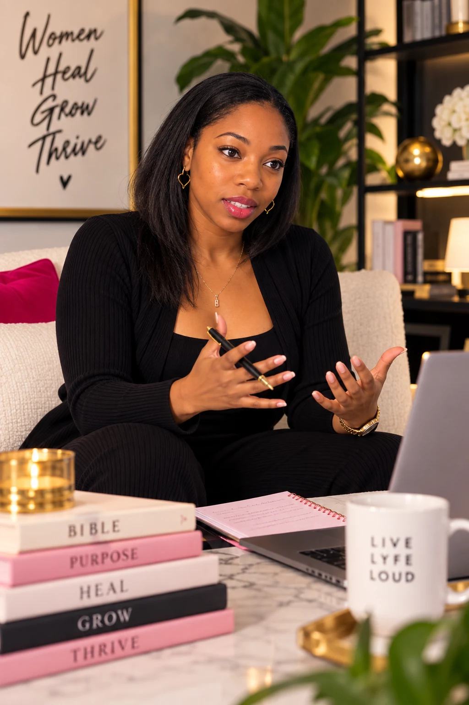
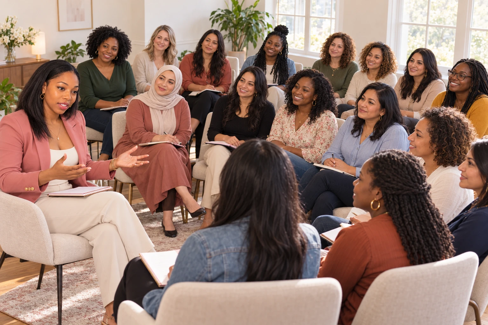
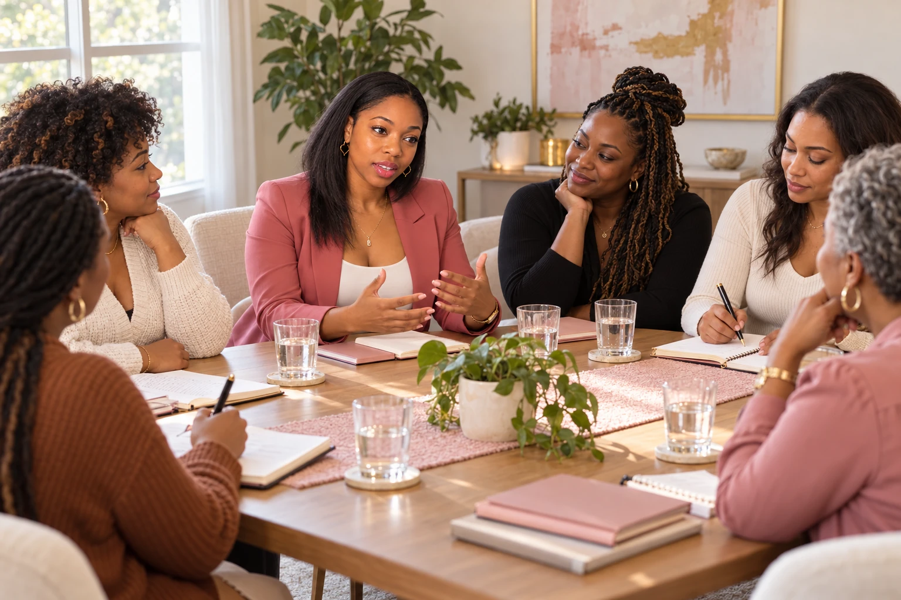
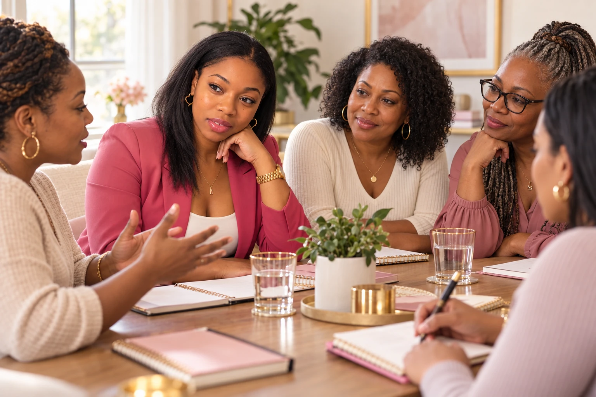

Find your
foundation.
Reconnect with God and make space for a life guided by faith, rather than the demands of simply getting through.
FAITH-CENTERED LIFE COACHING
You don’t have to have it all figured out.
A space to reconnect with God, rediscover yourself, and grow into a life rooted in purpose.
A space for women to heal, grow,
and become.

Nashay Williams
MEET NASHAY
I know what it feels like to be strong, keep showing up, and still feel disconnected from who you are. For years, I was functioning, but I wasn’t truly living.
Grief, relationships, and life transitions eventually forced me to confront a difficult truth: somewhere along the way, I had lost myself.
My journey back began with healing, intentional self-discovery, and reconnecting with God. I began learning who I was beyond survival and rebuilding a life rooted in faith, identity, and purpose.
As a clinician, life coach, and woman of faith, I bring both professional experience and lived experience to this work.
“I don’t teach from a place of perfection.The story of Live Lyfe Loud
I teach from a place of becoming.”
THE HEART OF THE WORK
Faith, personal development, and emotional wellness come together here. There is room for who you are today—and who God is calling you to be.
Reconnect with God and make space for a life guided by faith, rather than the demands of simply getting through.
Discover who you are in Christ, beyond what you have survived and the roles you carry for everyone else.
Begin creating a life that reflects your values, your growth, and who God has called you to be.
OUR STORY
What you have survived does not have to define the life you create next.
Live Lyfe Loud was born from a personal journey of healing, faith, and rediscovery. What began as a desire to help women live more intentionally grew into a greater mission: helping women move beyond survival, rediscover their identity, and create lives rooted in God-given purpose.
As the vision evolved, so did the work. Today, Live Lyfe Loud is a space where women can heal, grow, and become.

THE WORKSHOP · LIVING WITH PURPOSE
Recognize when you’re living in survival mode. Understand how change happens. Honor what helped you survive—and consider what may no longer serve the life you’re creating.
This workshop brings the stages of change together with faith, healing, identity, and purpose.
Ask about the workshopRevelation · Surrender · Renewal · Purpose
FIVE STAGES OF CHANGE
Before you feel ready to change, there can be space to notice how you’re living and what you need.
A MOMENT TO REFLECTWhere in my life am I simply getting through?
Begin considering change. Acknowledge both the desire for something different and the uncertainty that may come with it.
A MOMENT TO REFLECTWhat would I like to be different?
Get ready for change with intention. Identify a first step and the support that can help you take it.
A MOMENT TO REFLECTWhat is one small step I can prepare for today?
Put your intentions into practice. Make room for choices that reflect the life you want to create.
A MOMENT TO REFLECTWhat choice can I make differently this week?
Nurture the changes you’ve begun. Return to the practices and support that help you keep growing.
A MOMENT TO REFLECTWhat helps me stay connected to my purpose?


TAKE A BREATH. THERE IS MORE AHEAD.
Survival was a season.
Becoming is your calling.
LET’S CONNECT
Curious about coaching or the Surviving to Thriving workshop? Reach out to Nashay to start the conversation.
Get in touch